租車三寶
台灣駕照正本
必須為實體卡片，且有效期限需涵蓋整個租車行程期間。過期或數位版本一律不受理。
必帶駕照日文譯本
非國際駕照（IDP）！需至各地監理所申請，費用 NT$100。忘記申請？可於沖繩台灣辦事處補辦，約 400 日圓。
最重要護照正本
入境使用之護照，建議效期六個月以上，且與日文譯本申請時使用的資料相符。
必帶台灣核發的「國際駕照」在日本完全無效！ 日本僅承認依《1949年日內瓦公約》簽訂的特定國家駕照加官方譯本，台灣屬於此類別，故必須攜帶「監理所日文譯本」，而非一般國際駕照（IDP）。無譯本駕駛等同無照駕駛，保險全額失效。
左右完全相反
道路標誌對照
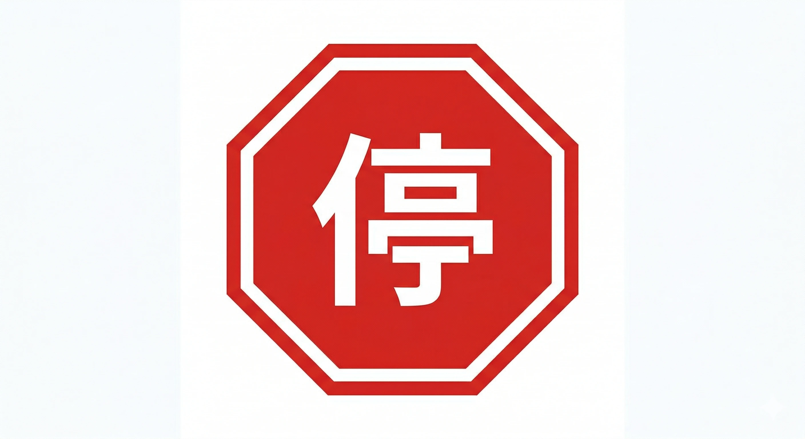
sign_tw_stop.webp停止標誌
紅色八角形，白字「停」
台灣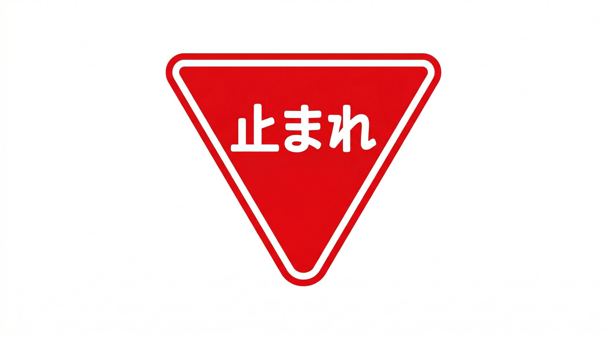
sign_jp_tomare.webp止まれ（停止）
紅色倒三角，白字「止まれ」。必須完全停車，車輪靜止！
日本 ⚠ 差異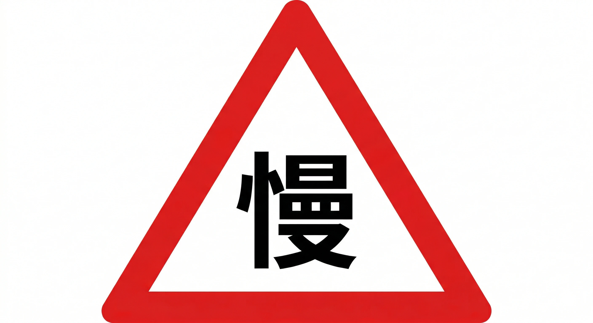
sign_tw_slow.webp慢行標誌
正三角形，白底紅框，黑字「慢」
台灣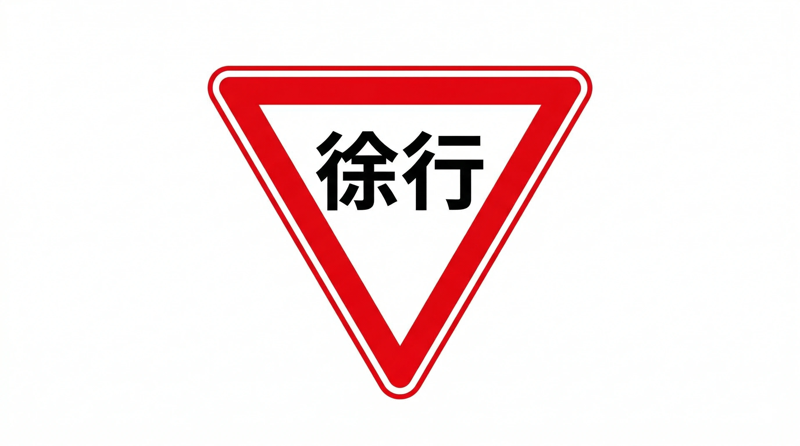
sign_jp_joko.webp徐行（慢行）
白色倒三角形紅框，黑字「徐行」。注意：倒三角！
日本 ⚠ 差異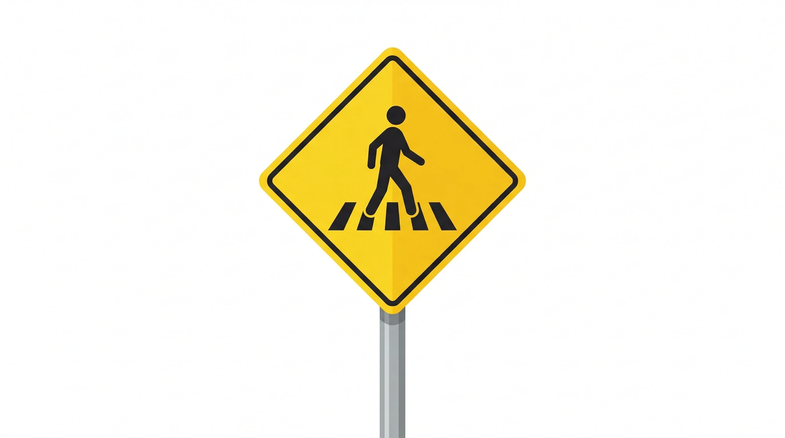
sign_jp_warning_diamond.webp警告標誌（菱形）
日本警告標誌為黃色菱形，台灣為三角形，形狀完全不同
日本 ⚠ 差異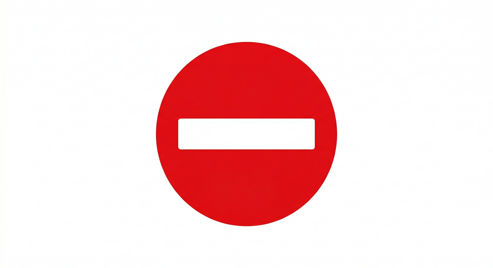
sign_no_entry.webp禁止進入（共通）
紅圓白橫槓，台日相同，但日本標誌通常附有文字補充說明
台灣 日本| 標誌種類 | 台灣形狀 | 日本形狀 |
|---|---|---|
| 停止標誌 | 紅色八角形「停」 | 紅色倒三角「止まれ」 |
| 慢行標誌 | 正三角形「慢」 | 倒三角「徐行」 |
| 一般警告 | 三角形（正立） | 黃色菱形 |
| 禁止進入 | 紅圓白橫槓 | 相同（含補充文字） |
| 讓行標誌 | 倒三角「讓」 | 倒三角（無文字，箭頭示意） |
車道線差異
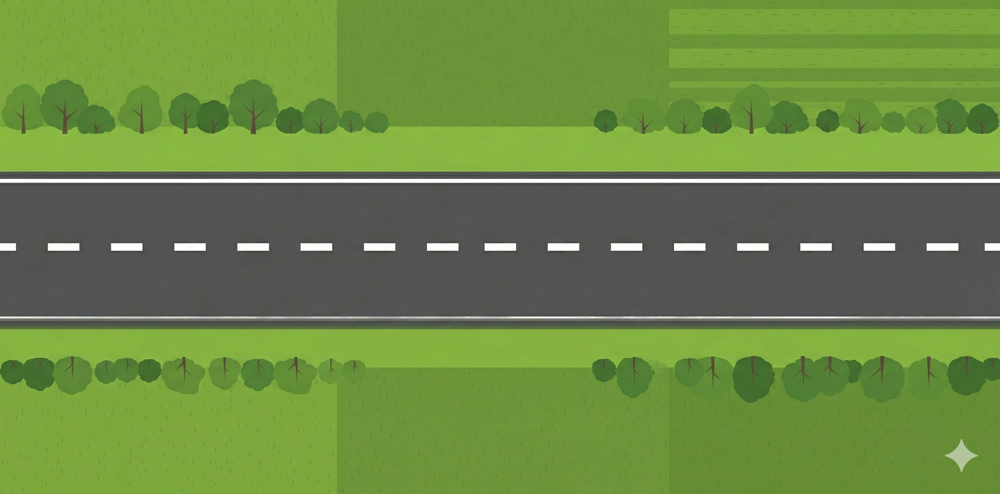
lane_white_dash.webp白色虛線（中央線）
台灣、日本均代表可超車或換道。設於片側寬 6m 未滿的較窄道路。
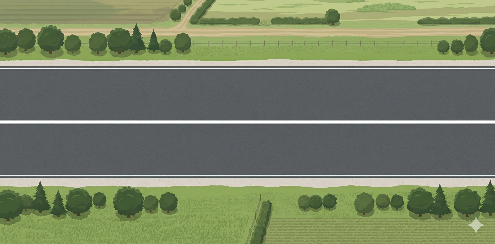
lane_white_solid.webp白色實線（中央線）
台灣、日本均禁止跨越。設於片側寬 6m 以上的較寬道路。
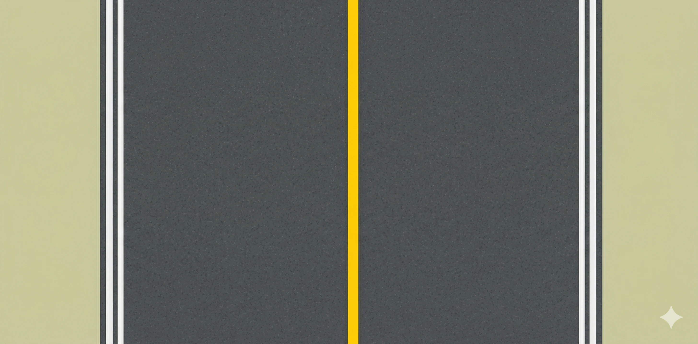
lane_yellow_solid.webp黃色（橘色）實線
禁止超車換道。日本：閃避停駐車輛時可例外跨越。
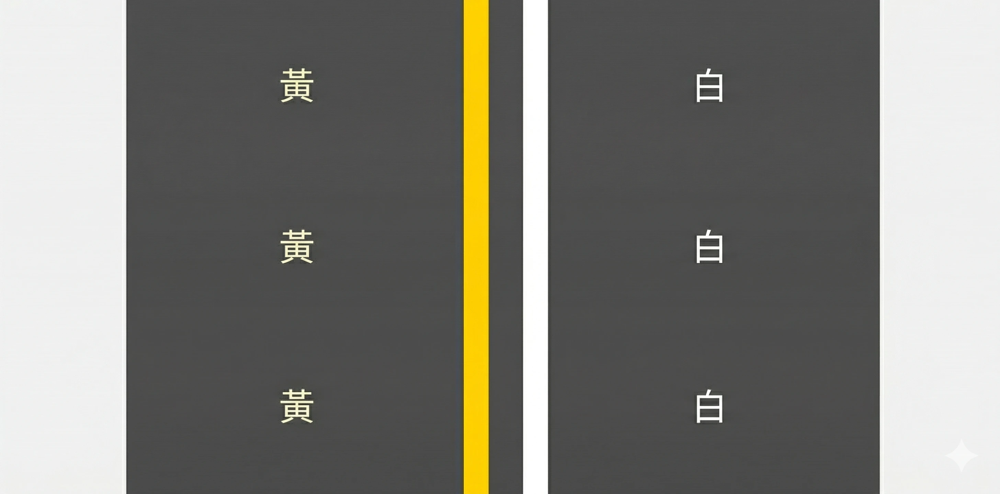
lane_yellow_white_double.webp黃白並行雙線 🇯🇵 獨有
白線側：可換道至黃線側。黃線側：禁止換道。台灣無此設計！
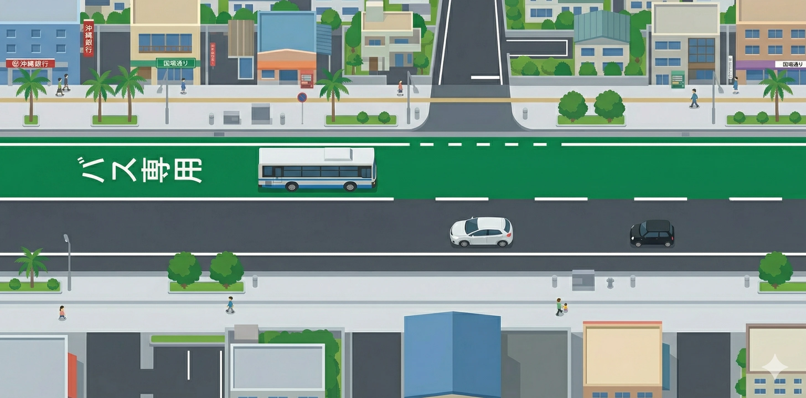
lane_green_bus.webp綠色路面 — 公車專用道 🇯🇵 獨有
那霸市區。平日 07:30–09:00 及 17:30–19:00 為公車、計程車、機車專用。一般車輛禁止進入。
右轉進入路旁設施
日本道路交通法第17條 vs 第34條的關鍵區別：中央線各種實線禁止的對象是「為超車而跨越」（第17條），右折進入加油站、便利商店、飯店等路旁設施屬於「方向轉換」（第34條），兩者適用不同法條。因此白線、黃線等各種中央線均可合法右折，但須遵守正確右折方法。
各線型右轉規則對照
| 中央線類型 | 右轉可否 | 法律依據 | 注意事項 |
|---|---|---|---|
| 白色虛線（破線） | ✅ 可以 | 道交法第17條・第34條 | 道幅 6m 未滿道路常見，右折前靠近中央線緩行 |
| 白色實線（單線） | ✅ 可以 | 道交法第17條・第34條 | 禁止「超車目的」跨越，但右折方向轉換合法 |
| 黃色（橘色）實線 | ✅ 可以 | 道交法第17條・第34條 | 禁止「為追越目的」跨越，右折入店仍合法 |
| 白＋黃並行雙線（黃側駕駛） | ✅ 可以 | 道交法第17條・第34條 | 黃線側禁止超車跨越，但右折方向轉換仍合法 |
| 白色雙實線 | ✅ 可以 | 道交法第17條・第34條 | 強調禁止超車，右折合法；需格外注意對向來車 |
| ゼブラゾーン（導流帶） | ✅ 可進入 | 非交通規制標示，無明文禁止 | 法律未禁止，但需注意同方向後方快速車輛，謹慎通過 |
右轉場景示意
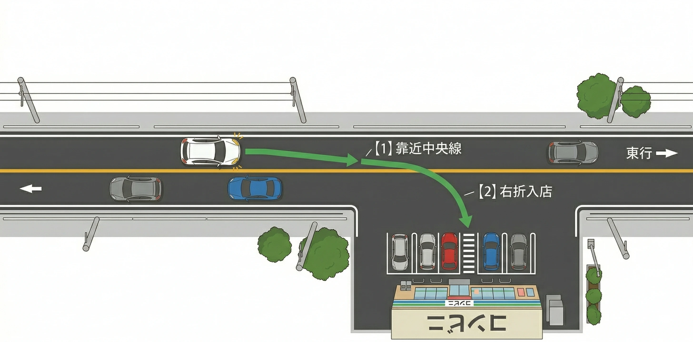
turn_right_yellow_line.webp✅ 黃色實線 — 右轉入店合法
右折進入便利商店、加油站屬「方向轉換」非「超車」，跨越黃色實線合法。右折前需靠近中央線，讓對向直行車先行。
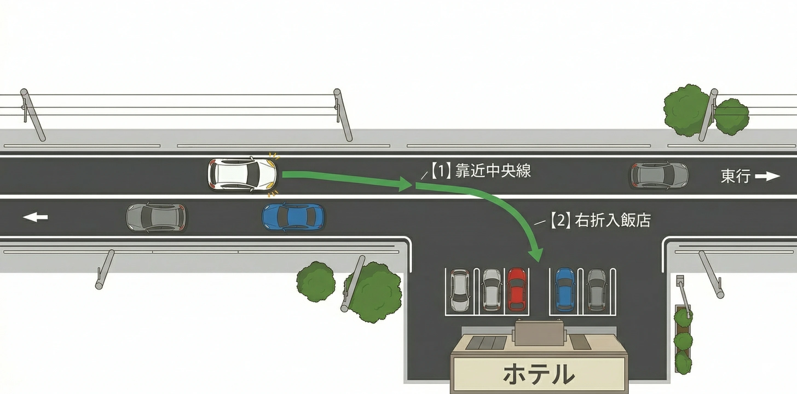
turn_right_white_solid.webp✅ 白色實線 — 右轉入飯店合法
白色實線僅禁止超車目的跨越。右折入飯店或停車場時，依第34條靠近中央線右折即合法。
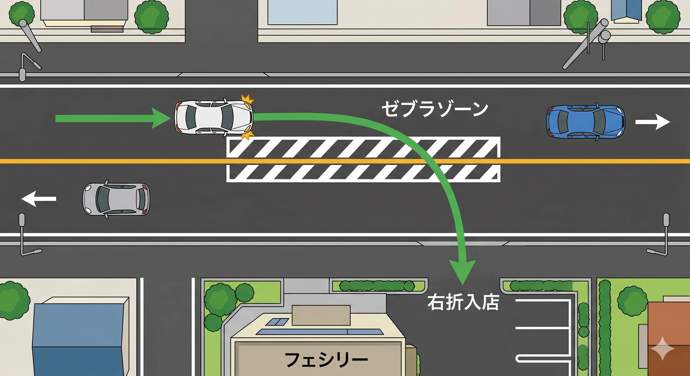
turn_right_zebra.webp⚠️ 導流帶（ゼブラゾーン）— 可進入但需謹慎
道路交通法未明文禁止進入白色斜線導流帶。為右折前往路旁設施可通過，但需注意後方車輛可能加速進入右轉道。
⛔ 黃色斜線區域（立入禁止部分）與白色導流帶外觀相似，但屬於明文禁止進入的路面標示，切勿混淆。
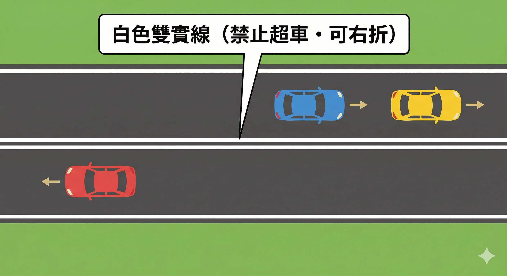
lane_double_white_solid.webp✅ 白色雙實線 — 右折合法
雙白實線為強調版禁止超車標線，右折仍合法。須格外注意對向車速，確認安全後再行右折。
❌ 絕對禁止右轉的情況
設有「右折禁止」標識
圓形藍底、白色右轉箭頭加紅斜槓標誌，或文字「右折禁止」標識。此為強制規定，無任何例外，違反直接罰款。
設有「直進・左折のみ」標識
標示只能直行或左轉的路口，右轉完全禁止。常見於市區複雜交叉路口或單行道出入口。
中央分離帶（實體隔離）
道路中央有植栽島、護欄或實體隆起分隔帶，物理上無法穿越，必須前往設有缺口處才能右折或迴轉。
黃色格子「立入禁止部分」
路口設有黃色格子線標示，車輛不得在其中停等。需等對向車通過、右方有足夠空間後，一次完成右折，不可中途停留格子內。
對向視線不良（彎道、坡頂）
非標線規定，但於彎道或坡頂無法確認對向來車安全時強行右折，若發生事故，右折車通常負全責。
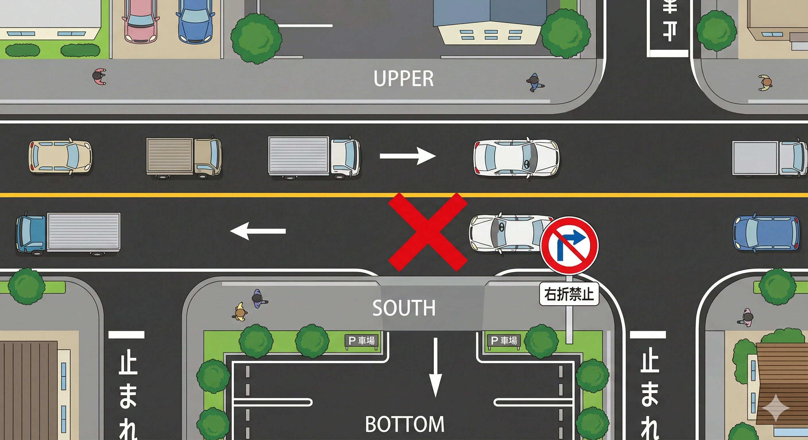
turn_right_forbidden_sign.webp❌ 右折禁止標識
出現此標識時任何右折均屬違規，無論中央線為何種標線，一律禁止。
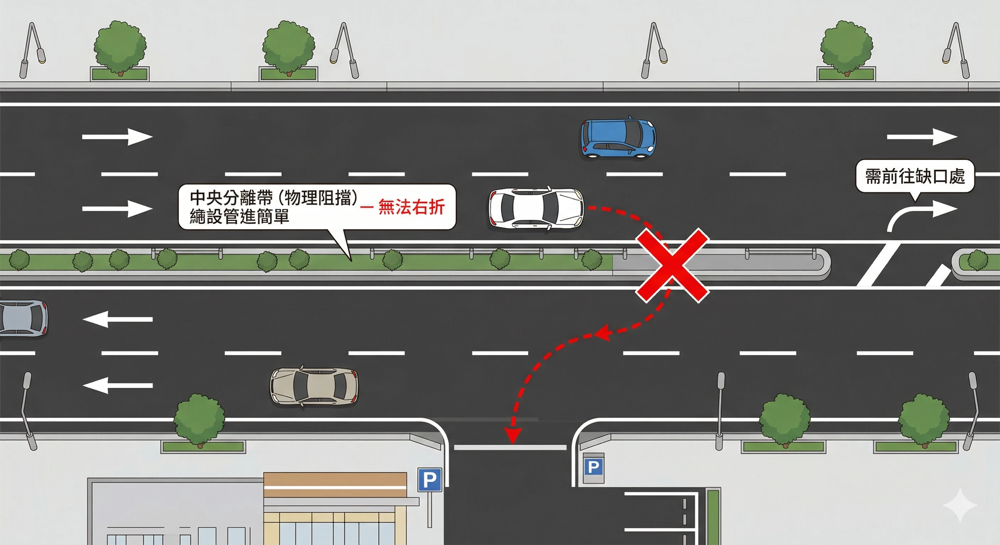
turn_right_center_divider.webp❌ 中央分離帶（物理阻擋）
有實體中央分隔帶的道路，物理上無法右折。需前往設有缺口的位置才能進行迴轉或右折。
🚗 實務操作步驟：如何右折才不妨礙後車？
提前打右方向燈（距目標 60～70m 前）
法律最低要求為右折點 30m 前，但實務上應更早（60～70m 前）打燈。方向燈優先於煞車，讓後方車輛提前判斷前車意圖、有充足距離減速，避免急煞。
逐漸靠近中央線、緩慢減速
打燈後開始向中央線靠攏，同步平順減速。不可先煞後打燈，也不可突然切入中央線——漸進式移動讓後車能預判並從左側空間通過。
車身保持直立，緊靠中央線等待
等待對向車輛時，車身必須保持直行狀態（不斜向），讓出左側空間。斜向等待不僅堵死後車，萬一被追撞還會衝入對向車道，非常危險。
對向車空隙出現→徐行完成右折
確認對向來車完全通過後，以徐行速度（約 10 km/h 以下）完成右折進入設施。不可因後車等待壓力而搶先插入對向車流——右折車優先順位最低，需讓對向直行車先行。
片側1車線道路：後車難以通行時怎麼辦？
當道路只有一線且對向車流持續時，右折車等待期間後車確實會卡住——這是法律允許的狀態，不構成違規。關鍵在於，只要你確實執行①②步驟（提前打燈、漸進靠近中央線），後車就有充足時間減速，不會造成急煞。如果道路夠寬，靠近中央線後留出的左側空間也足以讓後方機車或較窄車輛通過。若對向車流真的非常密集、等待時間過長，可考慮放棄此次右折，繼續直行後再尋找更安全的入口或路口，不要為了不堵後車而貿然搶入對向車道。
交通號誌
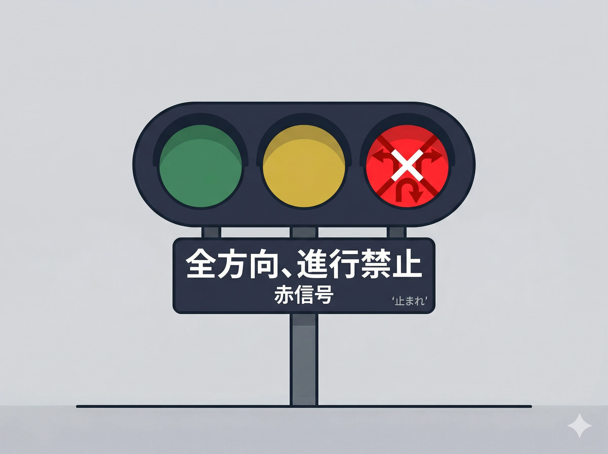
signal_red_no_turn.webp🔴 紅燈禁止轉彎
台灣部分路口允許紅燈右轉，日本完全禁止任何方向轉彎，必須等綠燈或方向箭頭燈亮起。
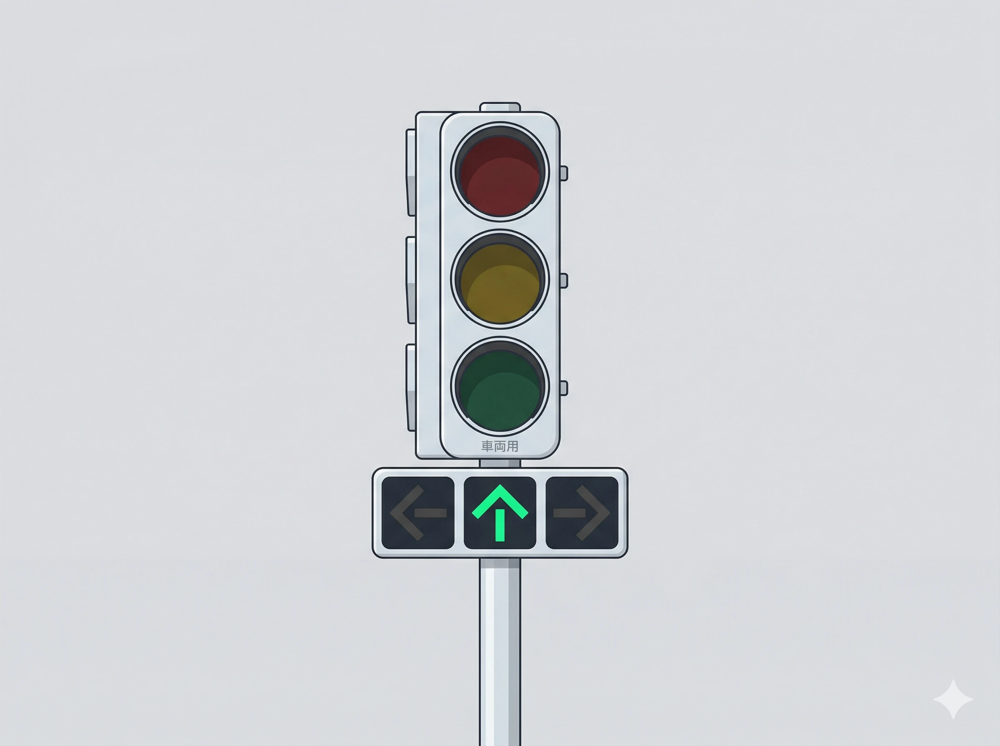
signal_arrow_green.webp🟢 方向箭頭燈
主號誌紅燈時，若對應方向箭頭燈亮起，可依箭頭方向行進。常見於直行↑、右轉→、左轉←三種。
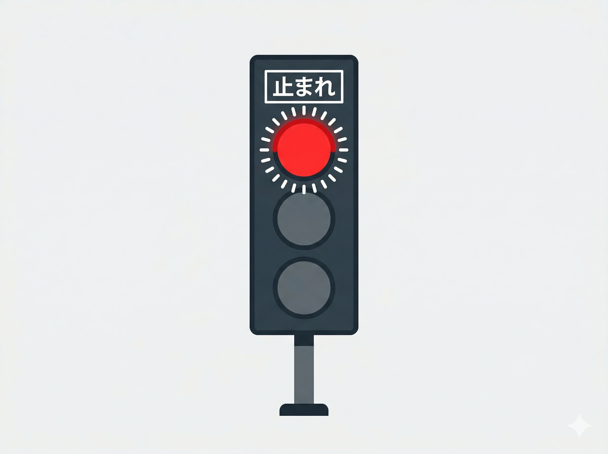
signal_flashing_red.webp🔴 閃爍紅燈
等同「止まれ」，必須完全停車，確認安全後再通行。台灣閃紅燈為「注意減速」，概念不同。
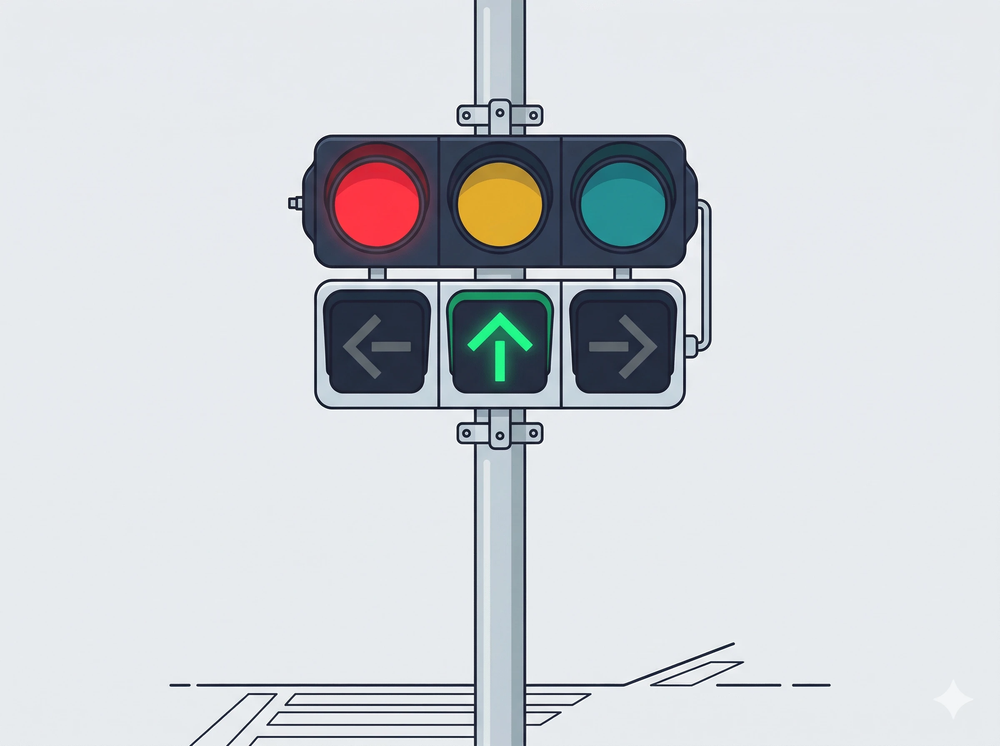
signal_double_row.webp雙排號誌（日本獨有）
上排為主號誌，下排為方向箭頭燈。主燈紅燈但下排箭頭亮時，可依箭頭方向行進。台灣無此設計。
行車規則差異
速限對照
| 道路類型 | 台灣 | 日本（沖繩） |
|---|---|---|
| 高速公路 | 最高 110 km/h | 最高 80 km/h（沖繩自動車道） |
| 市區道路 | 一般 50 km/h | 30～50 km/h |
| 郊區主幹道 | 60～70 km/h | 60 km/h |
行人禮讓（法律強制）
斑馬線旁行人等待中，即須停車禮讓。日本嚴格執法，違者直接罰款。台灣自2025年6月30日起大幅加重罰則：汽車行經行人穿越道未停讓，最高罰新臺幣6,000元並記3點、需參加3小時道安講習；若導致行人輕傷升至1.8萬～3萬元，導致重傷或死亡則罰3.6萬元並吊銷駕照。兩國均嚴格執法，切勿輕忽。
後座安全帶（全程強制）
日本全車全程必須繫安全帶，含後座乘客。台灣現行規定同樣全面強制，無論高速公路或一般道路，後座乘客均須繫安全帶。
兒童安全座椅（未滿6歲）
日本規定 未滿6歲（5歲以下）必須使用安全座椅；台灣為4歲以下。差了將近2歲，務必注意。
酒駕連坐責任
日本酒駕不僅罰駕駛，車主與乘客可能被連帶處罰。台灣同樣設有乘客連坐規定：年滿18歲的乘客，若明知駕駛酒測值達標準值（0.15 mg/L）以上或拒測仍未勸阻，可被罰新臺幣 6,000 至 15,000 元；年滿70歲、心智障礙者或搭乘計程車、客運等汽車運輸業的乘客可免責。
手機使用（含看導航）
手持使用手機違法，且「長時間注視手機導航」亦屬違規。請使用車架固定後操作。
按喇叭文化
日本僅限緊急避險才按喇叭。日常按喇叭被視為嚴重失禮，與台灣文化截然不同。
感謝雙黃燈（沖繩禮儀）
他車禮讓您並線或讓道時，短暫閃爍雙黃燈表達感謝。這是當地通行的駕駛禮儀。
右轉等待區
路口右轉須讓對向直行車優先。有「待轉區」請先進入等待，切勿強行右轉。此為外籍旅客最常肇事原因。
違規罰則
| 違規類型 | 罰則金額 | 嚴重程度 | 備註 |
|---|---|---|---|
| 未完全停於「止まれ」 | 7,000 日圓起 | 中 | 極常見，嚴格執法 |
| 無照駕駛（含無日文譯本） | 3年以下有期徒刑或 50 萬日圓 | 高 | 保險完全失效 |
| 超速（嚴重）／酒駕 | 刑事處分（紅色罰單） | 高 | 留有刑事前科，影響未來入境日本 |
| 超速（15 km/h 以內） | 行政罰款（藍色罰單） | 中 | 無刑事前科 |
| 違規停車 | 10,000～18,000 日圓 | 中 | 拖吊費另計 |
| 未使用兒童安全座椅 | 記違規點數 1 點 | 中 | 6 歲以下適用 |
| 違規轉彎（如紅燈右轉） | 7,000 日圓起 | 中 | 台灣旅客最常見違規 |
🚨 事故發生時處理流程
靠邊停車
立即停車靠邊，開啟雙黃警示燈，在後方設置警示標誌。
傷者救護 — 119
有傷亡立即撥打 119。即使無傷亡亦需確認乘客狀況。
報警（強制）— 110
撥打 110，無論大小事故皆須報警。警察出具「事故證明書」方可啟動保險理賠。
聯絡租車公司
告知狀況請求協助，租車公司有 24 小時緊急服務電話，合約內有號碼。
切勿私下和解
不可在警察抵達前與對方私下了結。日本法律要求正式記錄，私下和解將導致保險拒賠，且可能引發後續法律糾紛。
租車補償制度全解析
日本租車的補償制度分為三層，層層獨立、不能互相替代。台灣旅客最常犯的錯誤是以為加了「免責補償」就萬無一失，卻在還車時意外收到 NOC 帳單。出發前務必確認自己的補償層級。
補償架構三層說明
基本保險（租車費用已含）
所有租車方案均已內含基本保險，涵蓋對人無限額、對物無限額（含自賠責保險）、搭乘者傷害補償。但對物事故與車輛損傷各有自付額（免責額，通常各 5 萬日圓），發生事故需自行負擔這部分費用。
免責補償（任意加入）— 約 1,100～2,200 日圓／日
免除第①層中保險使用時的「自付額（免責額）」，讓事故修繕的自費降為零。沖繩地區行情約 1,650 日圓／日。注意：免責補償不含 NOC（營業補償金），NOC 仍需另外承擔。
NOC 補償（任意加入）— 約 500～2,200 日圓／日
NOC（Non-Operation Charge，ノンオペレーションチャージ）是車輛因事故或汙損送修期間，租車公司無法出租該車的營業損失補償金，由承租人負擔，與修繕費用完全無關。NOC 補償方案可免除此費用。
NOC 是什麼？為何讓人意外？
| 比較項目 | 免責補償 | NOC（營業補償金） |
|---|---|---|
| 補償對象 | 修繕車輛的費用（自付額部分） | 車輛送修期間租車公司的營業損失 |
| 收費金額 | 加入後免費（已支付補償費） | 自走可返還：2 萬日圓 需拖吊：5 萬日圓 |
| 觸發條件 | 事故損傷達一定程度 | 任何導致送修或清潔的情況，包含小刮傷、飲料汙漬 |
| 有無加入免責補償 | — | 無論有無加入免責補償，NOC 照樣計收 |
| 如何免除 | 加入免責補償方案 | 另行加入 NOC 補償方案（或含 NOC 的安心パック） |
⚠️ 實際案例：車輛被飛石打傷一小塊玻璃，免責補償免除了修繕自付額，但車輛仍需送修 3 天，NOC 2 萬日圓仍須自費。建議免責補償＋NOC 補償同時加入。
安心パック：超越基本補償的加值方案
大型租車公司（如 Toyota Rent a Car、Sky Rent a Car 等）提供「安心パック」或「ワイド補償」等進階方案，通常在免責補償基礎上追加少量費用，可覆蓋標準保險完全不保的項目。
⚠️ 標準保險＋免責補償仍不涵蓋的項目
- ✕輪胎爆胎・破損（バンク・タイヤ損傷）— 修理費或換胎費全額自費
- ✕飛石打破擋風玻璃（飛び石ガラス破損）— 實費自費，沖繩砂石路況常見
- ✕鑰匙遺失（キー紛失）— 差込型約 3 萬日圓，遙控型約 5 萬日圓
- ✕鑰匙鎖在車內（キー閉じ込め）— 道路救援出勤費用自費
- ✕輪轂蓋遺失・破損（ホイールキャップ）— 實費自費
- ✕車內裝備損壞・遺失（USB、導航等）— 實費自費
- ✕加錯油種（混油，例如加柴油）— 引擎損害費用全額自費
✅ 安心パック可額外涵蓋的項目
- ✓NOC 營業補償金（2 萬～5 萬日圓）
- ✓輪胎爆胎・損傷的修繕費用
- ✓飛石造成擋風玻璃裂痕・破損
- ✓輪轂蓋破損（但遺失通常仍自費）
- ✓車內裝備損壞・遺失
安心パック費用約 550～1,100 日圓／日（沖繩地區），疊加在免責補償之上。各公司名稱與內容不同，訂車前請仔細確認補償細節。
以下情況所有補償均無效，損失全額自費
飲酒駕車、無照駕車、事故未向警察報案（無事故證明）、超過合約使用時間、鑰匙留在車內導致被盜、故意行為、約款違反行為。任何補償均以「先向警察報案取得事故證明」為前提。
快速記憶清單
✅ 必須做到
❌ 禁止事項
🚨 緊急電話
警察（交通事故必撥）
救護車／火警
日本緊急電話可直接撥打，建議提前存入手機。
⛽ 加油站油種
加滿說法：「レギュラー、満タン、お願いします」